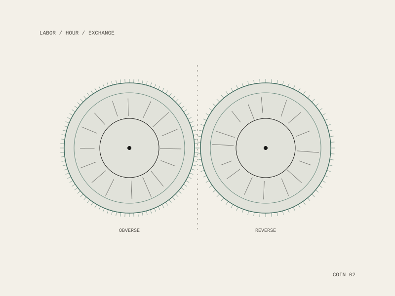

Unpaid Labor Coin
A coin denominated in unpaid labor: the care, maintenance and attention that hold every other kind of work up, and that no ledger has ever been asked to record.

The proposition
Wages make some work visible by pricing it. Everything the price does not reach — the raising, the tending, the cleaning, the remembering — stays economically invisible while remaining absolutely load-bearing. A coin is the bluntest possible instrument for making that visible: it forces a denomination onto something that has been kept deliberately undenominated.
Struck to the same specification as the Prayer Coin, a year later, and out of the same Recurse Center fellowship and residency. Together they mark the two directions value runs when it is not money: upward, unaccounted, and downward, unpaid.